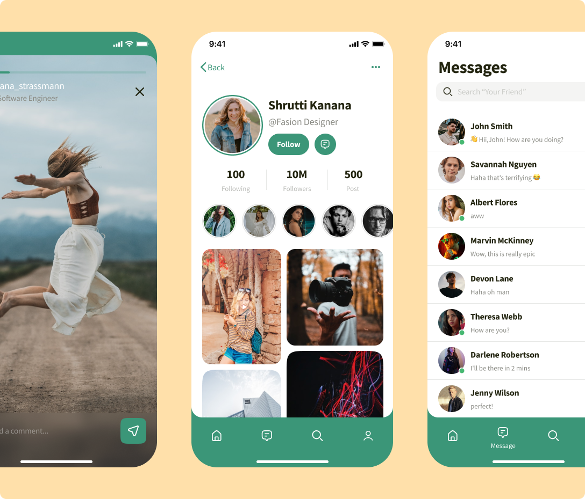
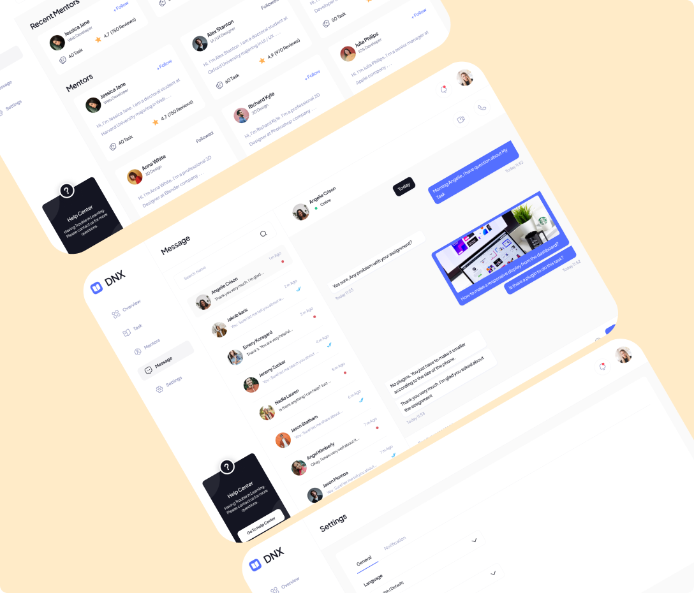

Projects
Explore a selection of my work, showcasing how I approach design challenges. Each project reflects my commitment to creating user-centered experiences that blend functionality with aesthetic appeal.
-
EcoCharge
Estações de recarga para veículos elétricos abastecidas com energia solar.
-
FinWise
Aplicativo de gestão financeira pessoal com análise de gastos e projeções automáticas.

-
SmartAgro
Sistema de monitoramento agrícola com sensores IoT para otimizar irrigação e produtividade.
-
PiSphere
Rede social para compartilhamento de fotos com filtros e álbuns colaborativos.

-
HealthTrack
Aplicativo para acompanhamento de saúde e hábitos, integrando dados de wearables
-
MentorHub
Plataforma de conexão entre mentores e mentorados com videochamadas integradas.
